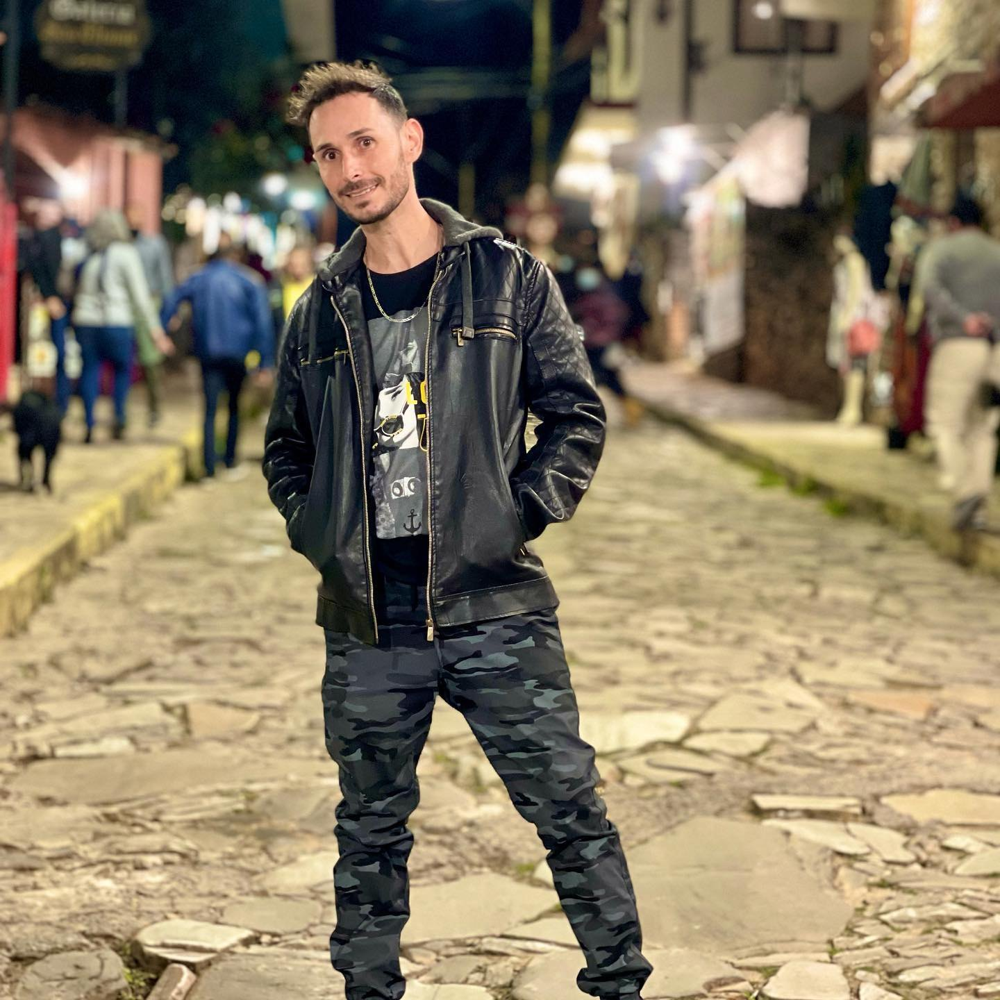

Prazer, eu sou oFabinho.
Antes de ter loja, eu tinha uma politriz, um balde e uma mania: não entregar o carro enquanto ele não estivesse do jeito que eu queria ver.
Comecei polindo carro de amigo e de vizinho aqui em Arcos, um por vez, no fim de semana. Cada carro era uma aula. Fui estudando técnica, testando produto, errando e acertando, até entender que polimento de verdade não é passar cera: é ler a pintura, medir o defeito com a lanterna e corrigir sem tirar o verniz que o carro não pode perder.
O boca a boca fez o resto. O carro do amigo virou o carro do patrão do amigo, depois a picape da fazenda, depois a moto de coleção. Quando eu vi, já tinha fila. Foi aí que a Fabinho Polimentos Detailing ganhou casa própria, na Avenida Magalhães Pinto, 1086, no Bairro Brasília: um estúdio coberto, com box de lavagem, área de polimento e luz de inspeção.
Hoje passam por aqui carros populares e carros que muita gente só vê em revista. E todos recebem o mesmo cuidado. Porque pra mim não existe carro simples: existe dono que confia o carro na minha mão. E isso eu levo a sério.
“Deus fez o sol. Já o brilho é por nossa conta.”
Fabinho
- O começoA primeira politriz, os carros dos amigos e a fama de caprichoso que correu Arcos.
- 2020Estúdio próprio no Bairro Brasília e o primeiro Destak Digital, na categoria Polimento Automotivo.
- 2021Destak Digital de novo e revendedor autorizado Vonixx e Protelim.
- 2022Terceiro Destak Digital seguido.
- 2024Mérito Empresarial ACE/CDL Arcos: a primeira vez que a cidade premiou a estética automotiva, e o prêmio veio pra cá.